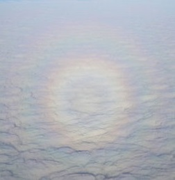

<html>
<head> 
<title> Ari Rapkin Blenkhorn - Homepage </title> 
</head>

<body bgcolor="#eeeeee">

<center> <h1> Ari Rapkin Blenkhorn </h1> </center>

  <table width="100%" cellpadding=0 cellspacing=0 border=0>
  <tr>
  <td>

   <br> 
  <td>
  <a href="Ari Blenkhorn CV June 2015.pdf">Ari Rapkin Blenkhorn</a> <br>
  PhD student in
  <a href="http://csee.umbc.edu/">Computer Science</a> <br>
  <a href="http://www.umbc.edu/">University of Maryland, Baltimore County</a> <br>
  <a href="mailto:ari@acm.org"><em>ari@acm.org</em></a> <br>
  <td>
  Office: ITE 352/365 (VANGOGH Lab) <br>
  http://www.umbc.edu/~ablenk1 <br>
  <a href="https://www.linkedin.com/in/ariblenkhorn">https://www.linkedin.com/in/ariblenkhorn </a> <br>
  <a href="Ari Blenkhorn CV April 2018.pdf">CV (April 2018)</a> <br>

  </tr>
  </table>
  <p>

<hr>

<h2>Dissertation Research</h2>

 <h3>GPU-accelerated perceptually-accurate spectral rendering of atmospheric phenomena using multi-dimensional sampling</h3>
 <table>
 <tr>
     <td>primarily glories...</td>
	 <td>also coronas....</td>
	 <td>and rainbows.</td>
 </tr>
 <tr>
     <td>
 <a title="Glory photo by Sandstein (Own work) [CC BY 3.0 (http://creativecommons.org/licenses/by/3.0)], via Wikimedia Commons" href="https://commons.wikimedia.org/wiki/File%3AGlory_on_clouds.JPG"></a>
     </td>
     <td>
<a title="Lunar Corona photo by Wiebke Salzmann (Own work) [CC BY-SA 3.0 (http://creativecommons.org/licenses/by-sa/3.0) or GFDL (http://www.gnu.org/copyleft/fdl.html)], via Wikimedia Commons" href="https://commons.wikimedia.org/wiki/File%3ACorona_moon_2.JPG">
	     </a>
     </td>
     <td><a title="Rainbow photo by Anna Langova [Public Domain] via PublicDomainPictures.net" href="http://www.publicdomainpictures.net/view-image.php?image=1053&picture=rainbow">
	     </a>
     </td>
</tr>
</table> 
<p>
<table width="90%"> 
<tr> 
 <td colspan="3">
 I have developed a highly-parallel GPGPU implementation of the Mie scattering equations which accelerates calculation of per-wavelength light scattering. The Mie calculations for each scattering angle and wavelength of light are independent of the calculations for any other, and can be performed simultaneously. My implementation dispatches large groups of these calculations to the GPU to process in parallel. I use a two-dimensional Sobol sequence to sample from (<i>wavelength</i>, <i>scattering angle</i>) space. The 2D Sobol technique ensures that the samples are well-distributed, without large gaps or clumps, thereby reducing the number of scattering calculations needed to achieve visually-acceptable results. The Sobol sampling calculations are also performed in parallel and use a recently-developed technique which precomputes partial results. Overall this work renders atmospheric glories at much faster speeds than previous serial CPU techniques, while maintaining high levels of visual fidelity as measured by both physical and perceptual image error metrics. Additionally, it yields equivalent-quality results with far fewer Mie calculations. The results obtained for glories apply fully or in part to related atmospheric phenomena.
 
 My goal is to produce perceptually-accurate images of atmospheric phenomena at real-time rates for use in games, VR, and other interactive applications. 
 <p>
 <a href="https://doi.org/10.1145/2787626.2787632">Poster</a> presented at SIGGRAPH 2015.
 </td>
 </tr>
</table> 

<!--
  <h4> <a href="publications.html">Publications</a> </h4>
-->
<hr>
<h2>Additional Research</h2>
<h3>RatCAVE: calibration of a projection virtual reality system</h3>
<table>
<tr>
   <td>
Collaboration between UMBC computer science researchers and Howard Hughes Medical Institute neuroscientists.
<p>
We have created a suite of automated tools to calibrate and configure
a projection virtual reality system. Test subjects (rats) explore
an interactive computer-graphics environment presented on a large
curved screen using multiple projectors. The locations and characteristics
of the projectors can vary and the shape of the screen may
be complex.
We reconstruct the 3D geometry of the screen and the location of each projector
using shape-from-motion and structured-light multi-camera
computer vision techniques. We determine which projected pixel
corresponds to a given view direction for the rat and store this information in a <i>warp map</i> for each projector. The projector uses that view direction to look up pixel colors in an animated cubemap. The result is a pre-distorted output image which appears undistorted to the rat's viewpoint when
displayed to the screen.
   </td>
   <td>
   
   </td>
</tr>
</table>
<p>
 <a href="https://doi.org/10.1145/2945078.2945091">Poster</a> presented at SIGGRAPH 2016.

<hr>
 
<h2>Brief Biography</h2>

	<h3>Education</h3>
  <ul>
  <li> PhD student, <a href="http://www.umbc.edu">University of Maryland, Baltimore County</a> (UMBC), <br>
	   <a href="http://www.csee.umbc.edu/">
       Department of Computer Science and Electrical Engineering</a> <br>
	    2014 to present. Expected completion September 2018.
  <li> M.S. in <a href="http://www.cs.cmu.edu">Computer Science</a> (graphics and animation), <br>
		<a href="http://www.cmu.edu">Carnegie Mellon University</a>, December 1997
  <li> M.C.S. in <a href="http://www.cs.virginia.edu">Computer Science</a> (computer vision), <a href="http://www.virginia.edu">University of Virginia</a>, May 1995
  <li> B.A. in <a href="http://www.mathematics.jhu.edu">Mathematics</a>, <a href="http://www.jhu.edu">Johns Hopkins University</a>, January 1992
  </ul>
  
  <h3>Employment Highlights</h3>
  <ul>
  <li> Senior Software Engineer, Perceptive Pixel, 2010-2012
  <li> Founder and Human-Computer Interaction specialist,<br>
  Two Lights Technologies, 2007-2010
  <li> Software R+D Engineer, <a href="http://www.ilm.com">Industrial Light + Magic</a>, 1998-2006
  <p>
  <li> Adjunct professor, <a href="http://www.usna.edu/MathDept/">Math Department</a>, <a href="http://www.usna.edu/">US Naval Academy</a>, 2012-2013
   <li> Adjunct professor, <a href="http://www.cs.usfca.edu">Computer Science Department</a>, <a href="http://www.usfca.edu">University of San Francisco</a>, 2005
  <li> Math instructor and program coordinator, <br>
       <a href="http://cty.jhu.edu">
	   Johns Hopkins University Center for Talented Youth</a>,
	   1989-1994
  <p>
	<li> Research Intern, Graphics and Interaction Research lab, <br>
		<a href="http://www.parc.com">XEROX Palo Alto Research Center</a> (PARC), Palo Alto, CA, 1996 
	<li> Research Intern, <a href="http://www.hpl.hp.com/techreports/Compaq-DEC/SRC-RR-157.pdf">Lectrice project</a>, DEC Systems Research Center (SRC), Palo Alto, CA, 1995
	
  </ul>
  <h4>I have one <a href="http://patft.uspto.gov/netacgi/nph-Parser?Sect1=PTO1&Sect2=HITOFF&d=PALL&p=1&u=%2Fnetahtml%2FPTO%2Fsrchnum.htm&r=1&f=G&l=50&s1=9,613,322.PN.&OS=PN/9,613,322&RS=PN/9,613,322">US Patent</a>, two skydiving <a href="https://en.wikipedia.org/wiki/Jump_for_the_Cause">world records</a>, and credits on <a href="http://www.imdb.com/name/nm0710760/">six films</a>. <br>
  My Erdos number is 4, and my Bacon number is 3. 


</body>
</html>

